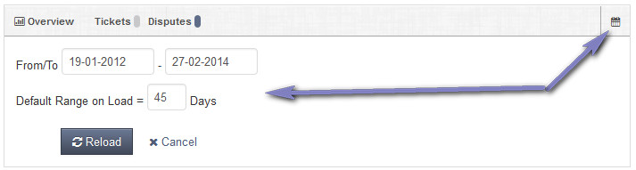
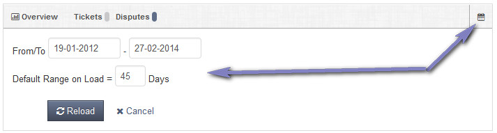

Admin Home
Overview
Overview of admin main screen for support team members. Click example images to display full size version in new tab/window.
Screenshot
{kind=link}
Overview Graph
The overview graph shows a basic overview of how many tickets have been opened. Disputes are only shown if enabled.
Click the icon to change the range.

The default range will be saved if changed when clicking the "Reload" button.
Click the icon to change the range.

The default range will be saved if changed when clicking the "Reload" button.
Awaiting Areas
Shows tickets currently waiting admin action. Disputes are only shown if enabled.
Overviews
Shows count overviews of each area. Clicking the counts will load the relevant page. Disputes are only shown if enabled.
Quick Links
Enables quick links. Can save time jumping to specific area. This can be user specific if required. To add a different quick links file for each user append -ID to the end of a new file.
The file is a copy of 'quick-links.php' file with the team ID appended (See user management for ID numbers).
Example: quick-links-16.php (would load ONLY for team member with ID: 16)
The file is a copy of 'quick-links.php' file with the team ID appended (See user management for ID numbers).
Example: quick-links-16.php (would load ONLY for team member with ID: 16)